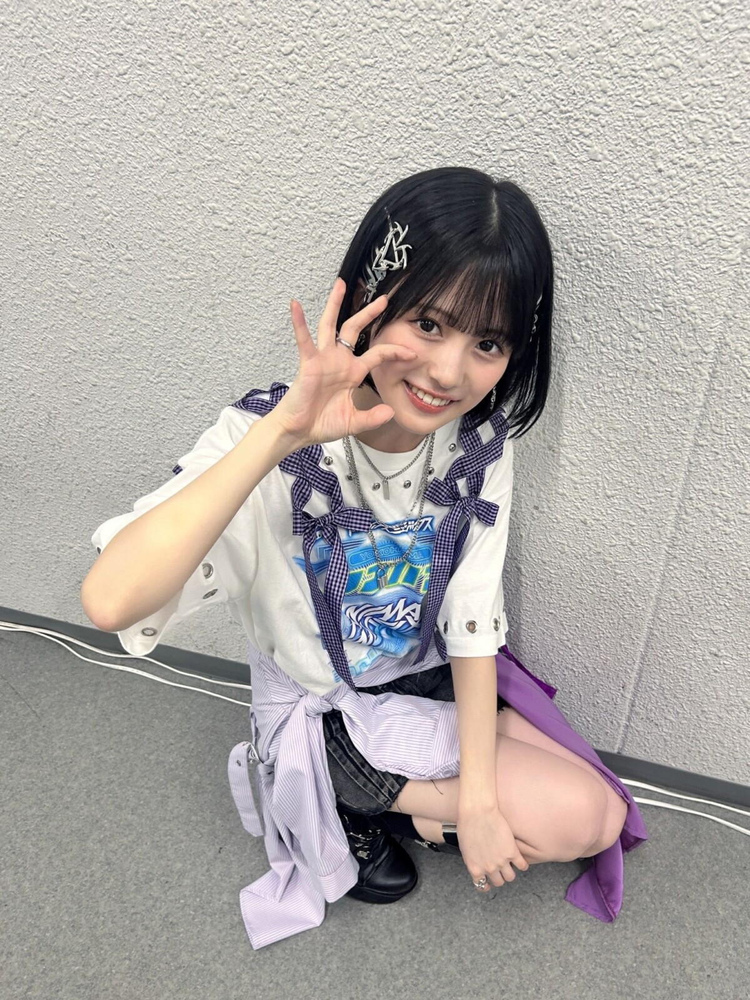

橘杏咲の立ち話もなんですから！ 第17回橘杏咲的“站着聊可说不完！” 第17回
皆さんこんにちは！
大家好！
今月は12月、、、12月！？！？おかしい。時の流れが速すぎておかしいです。でも遅い時もあるので、早送りと通常再生を交互にしている気分…。
这个月是12月……12月！？！？太奇怪了。时间过得太快简直不正常。不过有时候又觉得过得很慢，感觉就像在快进和正常倍速之间反复切换一样……
いつのまにか誕生日もハロウィンは終わっていたし、秋学期も半期が終わってしまいました。良くないですが、私は基本ギリギリで生きているので余計時の流れの加速度がすごい瞬間がある気がしています。気がしているだけかもです。
不知不觉间，生日和万圣节都已经过去了，秋季学期也已经过了一半。虽然这样不太好，但我基本上都是踩着死线活着的，所以更觉得某些瞬间时间流速的加速度惊人。不过也许只是我的错觉吧。
でも12月って…クリスマスじゃないですか！！🎄🎅🏻ケーキ！サンタさん！プレゼント！肉！世界の雰囲気も一面クリスマスなのが好きです。赤と緑やキラキラって気持ちも上がるんですよねぇ。
不过说到12月……不就是圣诞节嘛!!🎄🎅🏻蛋糕！圣诞老人！礼物！吃肉！我超喜欢整个世界都洋溢着圣诞氛围的感觉。红配绿还有闪闪发光的装饰，光是看着心情就会变好呢。
皆さんは自分にクリスマスプレゼントを買ってあげますか？？私は買ってあげちゃおっかなぁ～！！私は自分にも人にもプレゼントするのが大好き人間なのでね😼
大家会给自己买圣诞礼物吗？？我打算犒劳自己买一份哦〜!! 毕竟我可是无论给自己还是给别人都超爱送礼物的人类嘛😼
候補は靴か冬のアウターか整体の回数券です。迷います。
目前的候选项有鞋子、冬季外套，或者正骨推拿的次卡。好纠结呀。
11月にあったことをカメラロールとカレンダーを見て思い出していたのですが、イベントがかなり盛り沢山でした！
我一边翻看手机相册和日历，一边回忆11月发生的事，发现活动真是排得满满当当呢！
リリイベ系もぴょこぴょことありつつ、15日にはビッグイベントのANIMAX MUSIX がありましたね！！
除了零零散散地举办了好几场发售纪念活动之外，15日还有重磅大型演出 ANIMAX MUSIX 呢!!
天狼群としての初ステージ！皆さん、見届けてくださいましたか！？！？🐺
作为“天狼群”的首次舞台演出！大家都有亲眼见证吗！？！？🐺
11月に入ってからは、ANIMAX MUSIXが脳の端にずっといてドキドキが止まらなかったのでいつも以上に一瞬で半月が過ぎていきました。
进入11月之后，ANIMAX MUSIX 就一直盘踞在我脑海的一角，让我心跳加速停不下来，结果这半个月过得比平时还要一眨眼。
基本緊張はしないタイプなのですが、今回はかなりかなりかなり緊張しました。四人で揃って一緒に歌うのは、本当にステージでのリハが初だったのもあって余計緊張していたかもしれないです。
我平时基本属于不太会紧张的类型，但这一次真的非常、非常、非常紧张。再加上我们四个人凑齐一起合唱，实际上直到舞台彩排才是头一回，可能因此就更紧张了吧。
横浜アリーナ、大きかったなぁ〜。自分がまさかアリーナに立つ日が来るなんて。人生っておもしろすぎる！！私にとっての初ステージから10ヶ月、、、まだまだ慣れないです。その環境にも、自分がそこにいることにも。
横滨体育馆真的好大呀〜。真没想到自己居然有一天能站上体育馆的舞台。人生实在太奇妙了!! 距离我人生的首次舞台演出已经过去10个月了……但我依然还没习惯。不管是那样的环境，还是身处其中的自己。
前にもお話ししたかもしれないのですが、私は常にもう一人の小さな自分が上から自分のことを俯瞰して見ている気がしていて…。なので、慣れないことをしている時とかはその姿に違和感を感じてしまって恥ずかしくなったりすることがあるんです。
之前也许也聊过，我总觉得时刻有另一个小小的自己正从上方俯瞰着自己……所以当我在做不习惯的事情时，就会对那个身影感到违和，有时甚至会觉得害羞起来。
その違和感にまだまだ苦しめられることも多いのですが、まぁいずれ慣れるでしょう！でも本番はそんな違和感すら忘れ去ってしまうほど楽しかった！楽しかったです！！🫶🏻💜
现在我还是经常会被那种违和感折磨，不过嘛，总有一天会习惯的吧！而且正式演出的时候，开心到连那种违和感都抛到九霄云外去了！真的太开心了!!🫶🏻💜
お三方も本当に心強くて。先輩ってすごい。
三位前辈也真的非常让人安心。前辈们好厉害呀。
当日は不安やドキドキがすごかったこともあって、愛？がマシマシになってしまってず〜っとひっついてました。いや最近は通常でもそうなのかも。
演出当天大概是因为不安和紧张太强烈，我对她们的爱（？）直接加倍爆棚，一直黏在她们身边贴贴。不对，最近平时好像也差不多是这样。
お三方とも三者三様の包容力があるんですよ。先輩なのは間違いないのですが、本当にお姉ちゃんみたいな。だからどうしても甘えたくなってしまう！！いや、甘えるはちょっと違くて…甘えるとかかまって欲しくなるに変わるもっとスタイリッシュでかっこいい言葉ないですか！？それです。
三位前辈各自都有着截然不同的包容力哦。虽然毫无疑问是前辈，但又真的像亲姐姐一样。所以我总是忍不住想向她们撒娇!! 不对，说“撒娇”好像又不太准确……有没有什么能替代“撒娇”或“求关注”、听起来更时髦帅气的词啊！？我想说的就是那种感觉。
あ！「頼りたくなってしまう」かもです！頼り甲斐のある、頼らざるを得ない、頼もしい方たちです。もっとcoolな動詞があったら教えてください。
啊！也许是“忍不住想依赖她们”吧！她们就是那种值得依靠、让人不得不依靠的超级可靠的前辈们。要是还有更 cool 的动词，请务必告诉我。
でもとにかく無事に終わってよかった…また天狼群でパフォーマンスする機会があったら、次はもっとのびのびるんるんとそしてワっこよくパフォーマンス出来るよう頑張ります！！伸びしろ無限大で今は特に期間限定伸びしろ二倍でやらせてもらっているのでね。任せてくださいよ。楽しみにしていてください👊🏻
不过总而言之，能顺利结束真是太好了……如果以后还有机会以“天狼群”的身份登台表演，下一次我一定会努力做到更加舒展自在、雀跃欢快，同时又坏又帅地完成演出!! 毕竟我成长空间无限大，而且现在还正处于“限时成长空间双倍”期间呢。就交给我吧，敬请期待👊🏻

オフショが足りないっっっ！！アルバム衣装で撮ってなかった…。でもこのスタイリングは今回限定でとってもレアですからねっ！！本当にこのライブTシャツのアレンジ可愛すぐる、、、佐野さんいつもわっこよく可愛くしてくださってありがとうございます（ ; ; ）🤍
幕后花絮照严重不足啊!! 居然忘了穿专辑服装拍照……不过这套造型可是本次演出限定、超级稀有的哦!! 这件演出T恤的改造设计真的可爱过头了……佐野老师，非常感谢您总是把我们打扮得又坏又帅又可爱（ ; ; ）🤍
少しだけ、最近の嬉しかったことのお話ししても良いですか！
可以稍微分享一下最近让我很开心的事吗！
誰にでも褒められたら嬉しいことってあるじゃないですか。褒められるのは基本なんでも嬉しいですが、私は声優になってからは特にお芝居と声について褒めていただけるのが1番嬉しいです。エスペシャリー、お芝居かもですっ💭
每个人都有被夸奖时会特别开心的点对吧。虽然不管被夸什么我基本都很开心，但自从成为声优之后，尤其是演技和声音得到大家夸奖时，是我最最开心的时候。Especially，或许还是演技方面吧💭
応援してくださる皆さんからのお手紙にもたくさんのあたたかい言葉で溢れていて。その中でもお芝居や声について書いてくださる方が多くて、本当に嬉しいです。
支持我的大家寄来的信件里，也满满都是温暖的话语。其中有很多朋友都提到了我的演技和声音，真的让我非常开心。
このお仕事を始めてよかったなと思う瞬間でもあります。自分でも良いと気がつけなかったところを言語化して褒めていただけたり、良いものができたかもと思っても自信がなかったものを肯定していただけたり。本当に本当に嬉しいです。何度も言いますがいつもありがとうございますでいっぱいです…
这也是让我觉得“能走上声优这条路真是太好了”的瞬间。大家会把连我自己都没察觉到的闪光点化作语言夸奖我，也会对我虽然隐约觉得演得不错但心里没底的地方给予肯定。我真的非常非常开心。虽然已经说过很多次了，但心里真的装满了对大家一直以来的感谢……
先輩方に褒めていただけるのもとっても嬉しくて。最近、橘さんのこういうお芝居がいいね。その表現の仕方が素敵だねと伝えてくださる優しい方たちがたくさんいらっしゃって。毎回すぐにメモってます笑
得到前辈们的夸奖同样让我超级开心。最近有很多温柔的前辈对我说“橘小姐这样的演法很不错呢”“那种表现方式很棒哦”。我每次听完都会立刻记在备忘录里（笑）。
最近は特に力を抜いて自由にお芝居をするのが楽しくて楽しくて。キャラクターにもよりますが、私は基本考え過ぎずに、演じさせていただくキャラクターについては演じるまえに研究しまくって解像度を高めておいて、演じる際にはぱ〜っと気持ちよく自分の持つ味をあまり制御しないで出す！みたいな。
最近尤其是放松下来、自由自在地演戏这件事，让我觉得开心得不得了。虽然也要看具体角色，但我基本上不会想得太多——而是在配音前把要饰演的角色彻底研究透彻、提高对角色的解像度，到了真正演绎的时候，就痛快地放飞自我，不刻意压抑地把自己独有的味道释放出来！大概就是这种感觉。
そうすると、寄せるなりきるではなく、喋っているような生きているようなお芝居に近づく気がしていて。日々のアドバイスや先輩方のお芝居を元に、研究の余地しかないその地を深める毎日です。今はこんな感じで楽しくやっています！
我觉得那样一来，就不再是生硬地“贴近”或“扮演”角色，而是更接近角色真正在说话、真切活着一般的演技。每天我都会以大家日常给我的建议和前辈们的演技为基础，不断深耕这片还有无限钻研空间的领域。现在就是像这样开心地努力着！
未熟な自分ではありますが、未熟なりの試行錯誤が楽しくてしょうがないんですよね！
虽然现在的我还很不成熟，但正因为不成熟，这种不断摸索试错的过程才让人乐在其中、停不下来呢！
という、惚気？でした。おしまいっ
以上就是一段小小的“秀恩爱”（？）分享。汇报完毕！
そして！1月放送のアニメの詳細も少しずつ発表されてきていますね！嬉し楽しいお知らせが毎日のようにたくさんで幸せ満開の日々です〜🌟
还有！将于1月开播的动画情报也在陆续解禁啦！几乎每天都有许许多多令人欣喜快乐的好消息公布，最近真是幸福满开的每一天呢〜🌟
一つ一つ紹介したいのですが、取りこぼしてしまいそうなのでぜひぜひ私のXをチェックしていただけると嬉しいですっ！1月放送開始の作品たちについては、来月のコラムでしっかりお知らせ、お話しさせてくださいっ
虽然很想一部一部地介绍，但怕一不小心漏掉哪部，所以大家如果能去看看我的 X（原 Twitter）我会非常开心的！至于1月开播的这些作品，就请容我在下个月的专栏里好好为大家宣传、细细聊聊吧！
そして、12月はプリオケの2ndイベント「FUTURE SESSION」がありますね！！もう2ndがすぐそこに！！はやすぎる！！アニメ本編も第3クール目、お話しも深まりに深まってますね。ゼッタイ最高のイベントになると確信しているので、来てくださる皆さん。楽しみにしていてください！💫
另外，12月还有《Princession Orchestra》的2nd活动“FUTURE SESSION”呢!! 第2场活动转眼就在眼前了!! 太快了吧!! 动画正片也进入第3季度，剧情愈发深入扣人心弦了呢。我坚信这绝对会是一场最棒的活动，将要到场的各位，请尽情期待吧！💫
自分でハードルをあげてしまったような気もしますが、とりあえず練習頑張ります。例の曲も歌うことが決まりましたしね。がんばります。
总觉得好像自己把期待值拉高了，总之先好好努力练习吧。毕竟那首“传说中的曲子”也决定要唱了呢。加油加油。
あれ、今更気がついたのですが、もしかして今回2025年分のコラムラストなのでは！！
咦，我直到现在才反应过来，莫非这一回就是2025年的最后一篇专栏了吗!!
なんと！！もしかしてこれは、「良いお年を」チャンスですか！承知しました！
什么!! 难道说，这就是可以说“提前祝大家过个好年”的好机会吗！收到！
では、2025年ラストの目標を。
那么，来宣布2025年的最后一个目标吧。
今月の目標はズバリ！
本月的目标正是！
「元気いっぱい走り抜ける！！！」
《元气满满地一路冲到底！！！》
です！ゼッタイに体調崩さない！心身元気で2025年を終えたい！！です！なので全力で駆け抜けます。気持ちの良い年越しができますように…！
就是这个！绝对不能把身体搞垮！我想身心都元气满满地为2025年画上句号!! 所以我要全力冲刺到底。愿大家都能舒心愉快地跨年……！
ここまで読んでくださり、ありがとうございました！
非常感谢大家一直读到这里！
年末、皆さん忙しない日々が続くと思いますが、2025年最後を気持ち良く終われるように身体には十分お気をつけて！一緒に元気に年越ししましょうね！
临近年末，大家想必都会持续忙碌奔波，为了能舒舒服服地度过2025年的尾声，请务必好好保重身体！让我们一起元气满满地迎接新年吧！
ではっ良いお年を✨
那么，祝大家过个好年✨
橘さんに質問！向橘小姐提问！
Q：橘さんは「イラストを描くこと」が趣味だと拝見しました！描く時って、下書きからきっちり派ですか？それとも、気の向くままに描き進めるフリーダム派ですか？（東京都・インクの香り）
问：我看到资料里写着橘小姐的兴趣是“画插画”！请问您画画的时候，是先认真打好草稿的严谨派，还是随心所欲想到哪画到哪的自由派呢？（东京都·インクの香り）
インクの香りさん、ご質問ありがとうございます！
インクの香り，感谢你的提问！
そうでした！趣味欄にイラストを描くことって書いてあるんでしたね私！！笑 最近は前に比べて本気で何かを描く瞬間がなくて落書きがメインになっているんですよね。
对哦！我的兴趣栏里确实写着画插画来着!!（笑）最近和以前相比，没什么机会正儿八经地画大作，基本上都是随手涂鸦为主呢。
でも昔からの手癖で描いてしまうので好きなんだろうな。私は基本、ド・フリーダムです！！中高生の頃、タブレットでお絵描きをしているときはかなり綺麗に下書きしていた時もあるような気がするのですが、基本フリーダムでした！
不过从小养成的习惯让我手一闲下来就忍不住画两笔，看来果然还是很喜欢画画吧。我基本上属于“究极自由派”!! 初高中时期用平板画画的时候，隐约记得也有过把草稿打得相当工整的时候，但骨子里还是自由派！
今はドドド・フリーダムです。落書き、楽しいっ！
现在更是“究究究极自由派”了。随手涂鸦，超快乐的！